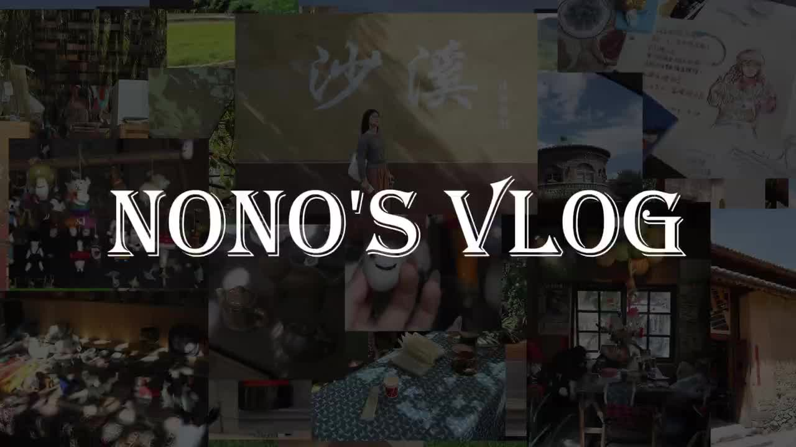
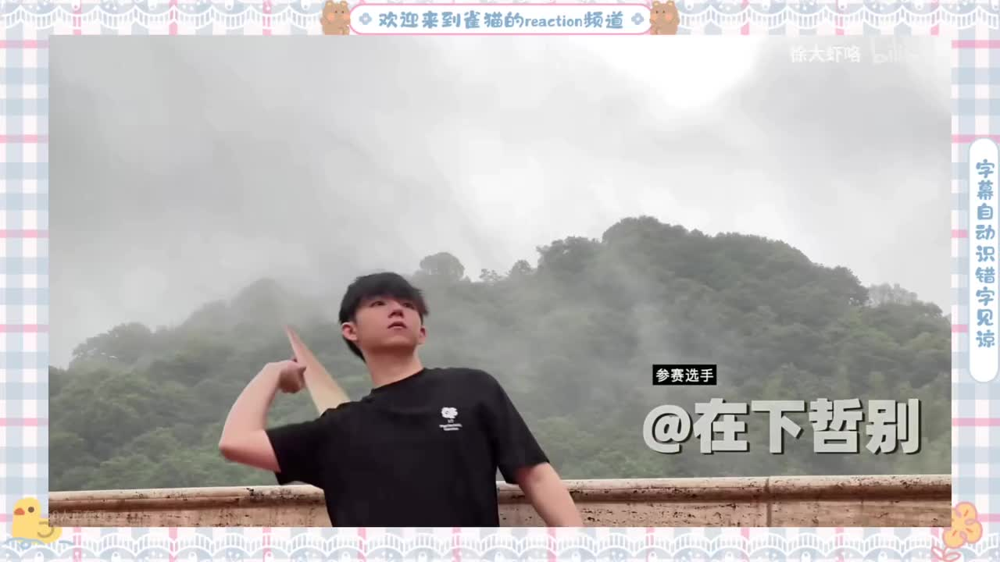

nono & txxSINCE 2025.09.17 · PRIVATE ARCHIVE 我们的小小档案把一起走过的日子收进同一个地方。照片、影像和重要日期，都在这里慢慢留下。回忆Video重要日期你的镜头—DAYS TOGETHER2025.09.17 — TODAY 搜索备份秘密nono & txxSTILL COLLECTING
nono & txx始于 2025.09.17从那天起，我们有了共同的以后。— 天这里不需要向所有人解释。它只负责替我们保存，那些不想忘记的照片、影像和日子。回忆Video重要日期你的镜头秘密nono & txx
nono & txxOUR WEB · 2025—两个人的生活目录—DAYSSINCE 2025.09.17回忆Video重要日期搜索备份你的镜头秘密仍在继续收集照片、影像，以及我们记得的每一天。